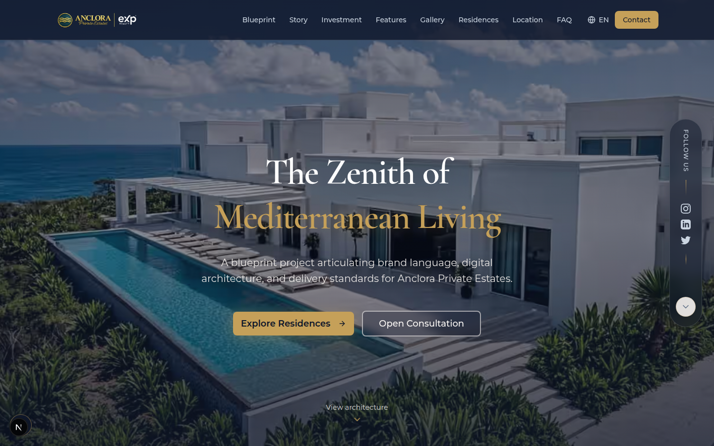
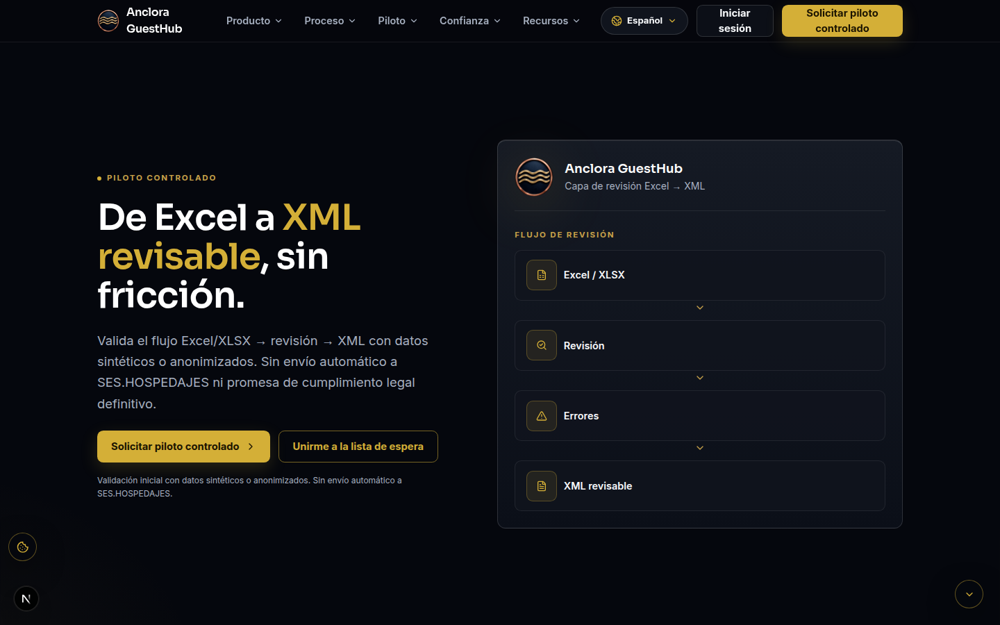
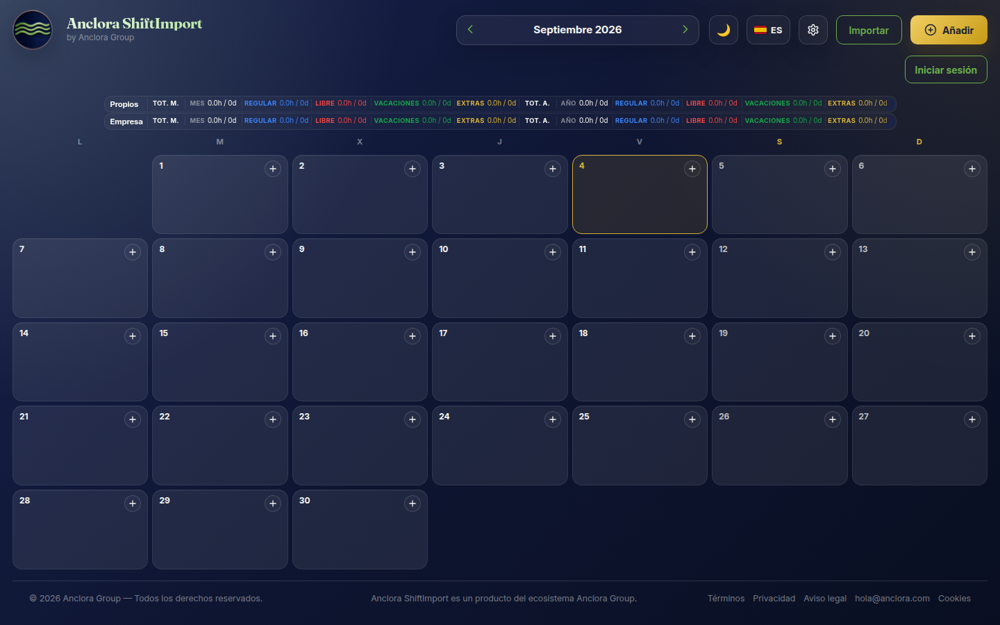
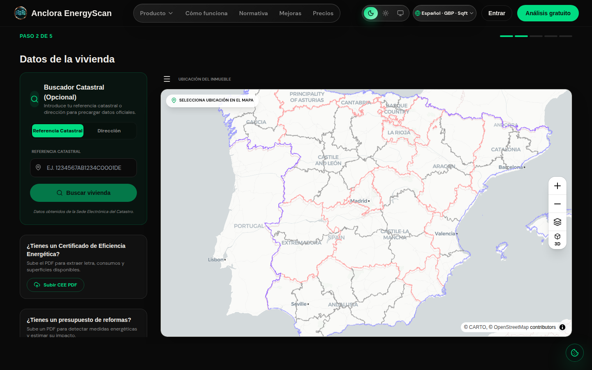
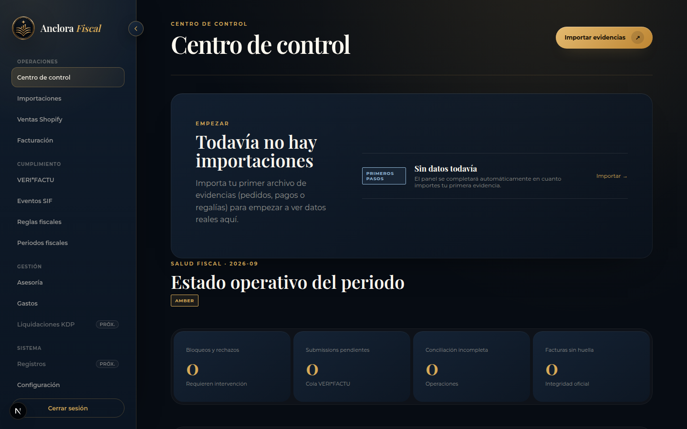
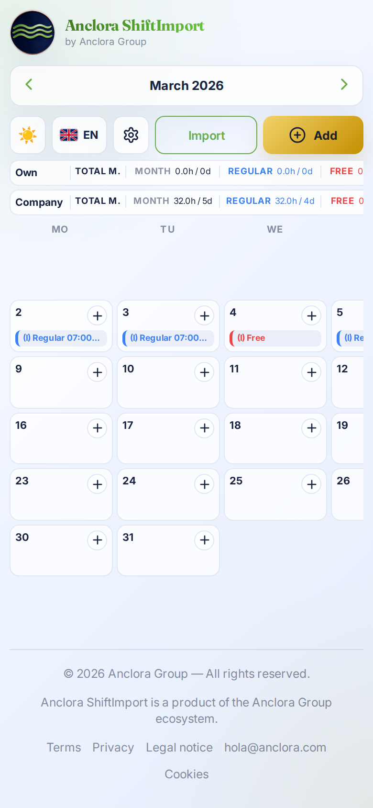
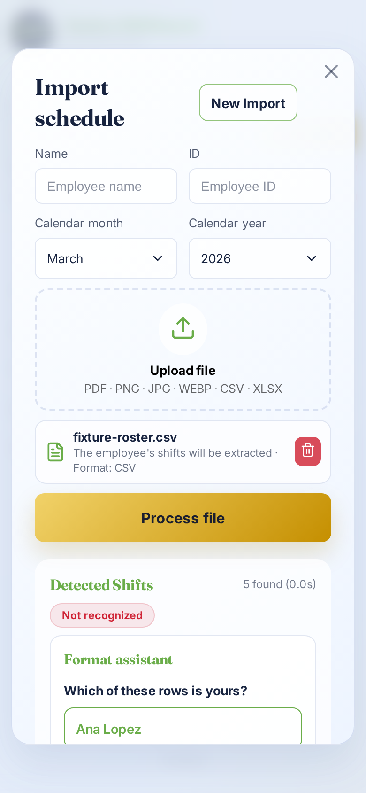

01Producto showcase
Anclora Portfolio
Experiencia digital premium para un desarrollo inmobiliario de lujo ficticio, diseñada como un recorrido de conversión y no como un simple folleto.
Next.js · React · TypeScript · i18n · captación
Fundador · constructor de productos IA · Palma de Mallorca
Ingeniería de producto · IA aplicada · Automatización estratégica
Más de 24 años en ingeniería de software, ahora centrado en convertir dominios complejos en productos claros y útiles — combinando estrategia de producto, IA aplicada, automatización y una entrega disciplinada. Lidero Anclora Group, un ecosistema tecnológico todavía en construcción.
Ahora construyendo Anclora Group — un ecosistema liderado por su fundador para real estate, automatización y operaciones digitales trazables.
Soy Ingeniero Técnico de Telecomunicaciones con más de 24 años construyendo software empresarial — desde sistemas Oracle para la administración pública hasta productos SaaS y PWA modernos. He trabajado en todas las fases del ciclo de vida del software: análisis, diseño, implementación, pruebas y soporte en producción.
En los últimos años me he orientado deliberadamente hacia la IA Generativa y la automatización avanzada: integración de LLM, RAG, ingeniería de prompts, orquestación multiagente y desarrollo dirigido por especificaciones con agentes de código IA. La constante es la revisión humana: los agentes aceleran la implementación, pero el criterio de producto, la calidad y la responsabilidad siguen siendo visibles.
Puestos anteriores (1997–2000) en Eurosoft IT, Fórum Informático y Tecnológico, y Grupo Gesfor — desarrollo de aplicaciones con Oracle Developer / PL·SQL. Historial completo en el CV descargable.
Anclora Group es un proyecto activo que fundé para explorar cómo la IA aplicada, la automatización, los datos y la experiencia de cliente pueden trabajar juntos en productos reales. Todavía está en construcción, por lo que el trabajo siguiente se presenta con etiquetas claras de madurez, no con una narrativa corporativa sobredimensionada.
Cada producto enlaza con su repositorio original y con su caso de estudio profesional reducido. Las capturas utilizan datos sintéticos o anonimizados cuando así lo especifica el proyecto de origen.
Repositorios reales, datos sintéticos y casos de estudio honestos.

Experiencia digital premium para un desarrollo inmobiliario de lujo ficticio, diseñada como un recorrido de conversión y no como un simple folleto.
Next.js · React · TypeScript · i18n · captación

Flujo orientado a la privacidad que convierte hojas de reservas heterogéneas en una preparación XML revisable para compliance hotelero.
Next.js · React · Prisma · ExcelJS · XML

Flujo para trabajadores por turnos: del documento al calendario estructurado, con revisión antes de escribir cualquier dato.
React · Vite · TypeScript · PDF.js · OCR · ExcelJS

Prediagnóstico residencial guiado con score explicable, señales de confianza y escenarios de mejora. No es un certificado oficial.
Next.js · React · Prisma · MapLibre · Stripe

Operaciones fiscales trazables para comercio digital: ingesta, conciliación, facturación y preparación de periodos con revisión humana.
Turborepo · Next.js · Fastify · Drizzle · PostgreSQL
Criterio compartido
Cada caso separa el producto original del showcase profesional reducido y hace visibles sus límites.
Ver mapa de repositorios →Las capturas proceden del paquete local de evidencias del portfolio. Los datos son sintéticos o anonimizados cuando así se indica en cada caso.
Es habitual que un trabajador por turnos reciba su cuadrante de otra persona, en el formato que esa persona haya usado — PDF, foto del móvil o una hoja de cálculo. Pasarlo a un calendario personal implica reescribir cada turno a mano.
ShiftImport analiza el fichero subido (PDF.js para documentos, OCR con Tesseract.js para imágenes, ExcelJS para hojas de cálculo), extrae los turnos candidatos y muestra una vista previa editable antes de escribir nada en el calendario. Cuando una fila no puede clasificarse con confianza, un paso de "asistente de formato" pregunta directamente ("¿Cuál de estas filas es la tuya?") en lugar de adivinar silenciosamente.
Cada importación genera una vista previa revisable y editable — el calendario nunca se modifica directamente desde un resultado de análisis.
Todo registro empresarial lleva un organization_id; los turnos requieren tanto una organización como un empleado, aplicado a nivel de esquema, no solo en el código.
La detección de duplicados usa una huella de organización + empleado + fecha/hora, no solo la fecha, ya que es posible que un mismo empleado tenga más de un turno legítimo el mismo día.
Pruebas de componente y de flujo con Vitest (modal de importación, áreas del calendario, sesión/autenticación); pases de QA visual y móvil con guion, capturados como evidencia en distintos idiomas y anchos de pantalla.


Propiedad de producto de principio a fin: identificar un problema real y acotado; construir un pipeline de análisis multi-formato con degradación elegante; diseñar aislamiento multi-tenant a nivel de esquema; y ser honesto en que el producto es un prototipo funcional, no un producto comercial terminado.
AOS es la capa de gobernanza que construí para mantener productivos a los agentes de código IA sin perder el control: un framework universal de skills que cualquier runtime de agente puede descubrir e invocar mediante el mismo contrato, en lugar de prompts ad hoc por herramienta.
Unidades de trabajo de agente gobernadas y versionadas (manifiesto + instrucciones + runtime) descubribles por capacidad, no por nombre de agente.
Las skills declaran las capacidades requeridas como identificadores; el runtime las contrasta con lo realmente disponible antes de ejecutar nada.
El mismo contrato de skill se ejecuta desde Claude Code, Codex o una CLI simple — sin duplicar lógica por proveedor.
Cada ejecución devuelve evidencia MEASURED / DECLARED / INFERRED y un estado PASS / PASS_WITH_GAPS / FAIL / BLOCKED. Las acciones destructivas o no gobernadas se bloquean por defecto, no por opción.
Integración de LLM (Anthropic Claude, OpenAI, Ollama), RAG, ingeniería de prompts, orquestación multiagente, gobernanza de IA.
Desarrollo dirigido por especificaciones, definición de producto, roadmapping honesto sobre madurez, UX para SaaS/PWA.
N8N, Make, Flowise, automatización de flujos, pipelines agénticos, entrega con supervisión humana.
Next.js, React, TypeScript, Node.js, Fastify, PL/SQL, Oracle Fusion Middleware.
Modelado de datos multi-tenant, diseño de APIs, gobernanza basada en capacidades, sistemas independientes de proveedor.
Vercel, Neon, Supabase, CI/CD con GitHub Actions, pipelines de promoción por fases.
Claude Code, Codex, Cursor, flujos con MCP, revisión de código, guardarraíles de ejecución de agentes.
PostgreSQL, Prisma, Drizzle ORM, pipelines de análisis (PDF, OCR, hoja de cálculo, XML).
Implementación original y caso de estudio profesional reducido.
Con base en Palma de Mallorca, España. Abierto a puestos remotos e híbridos.